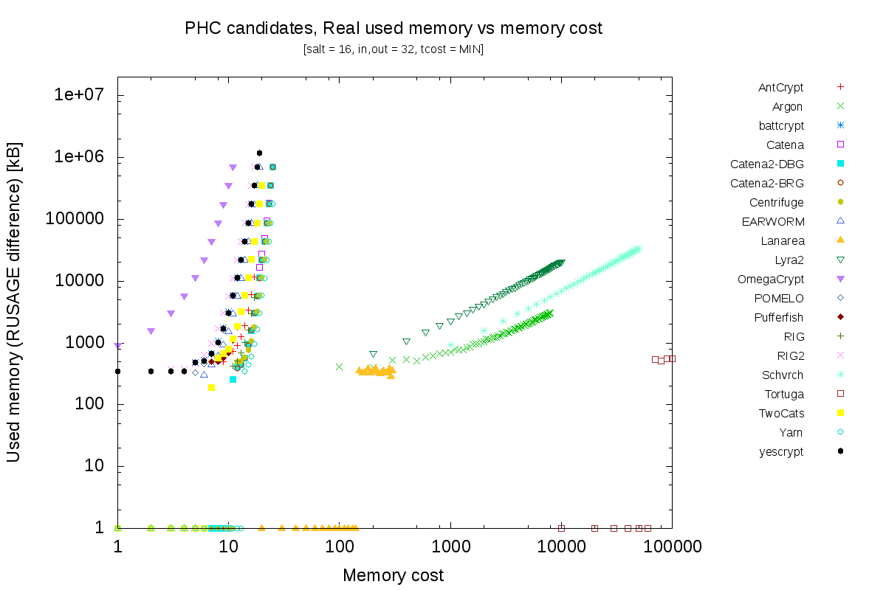
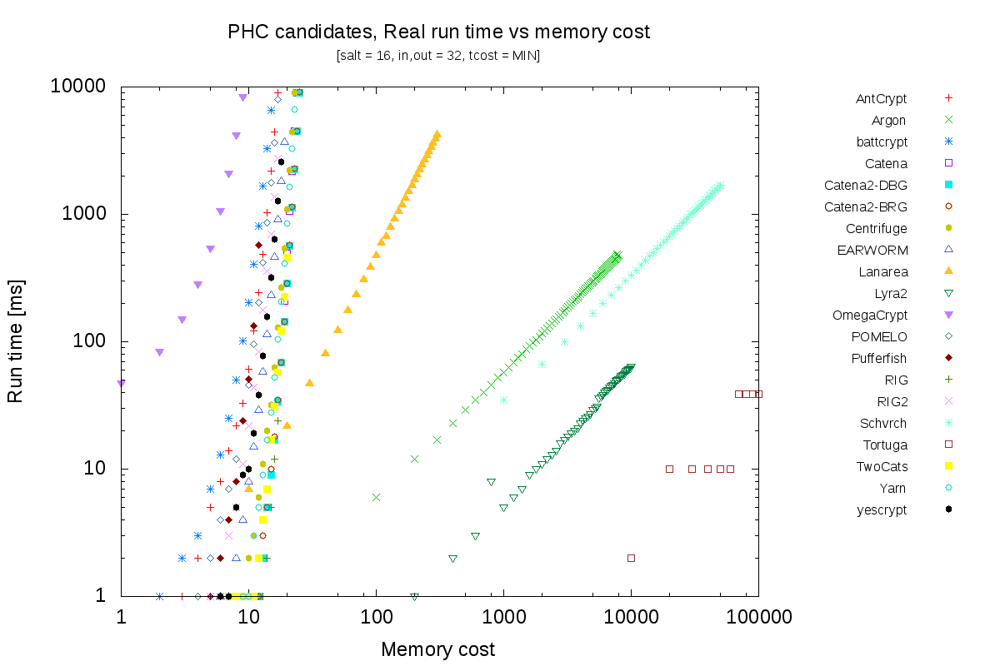
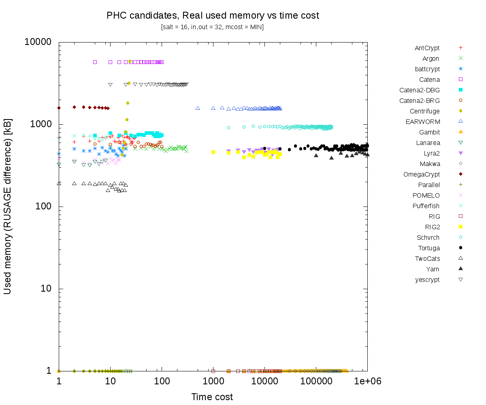
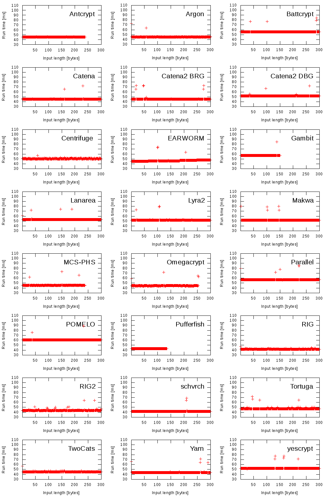
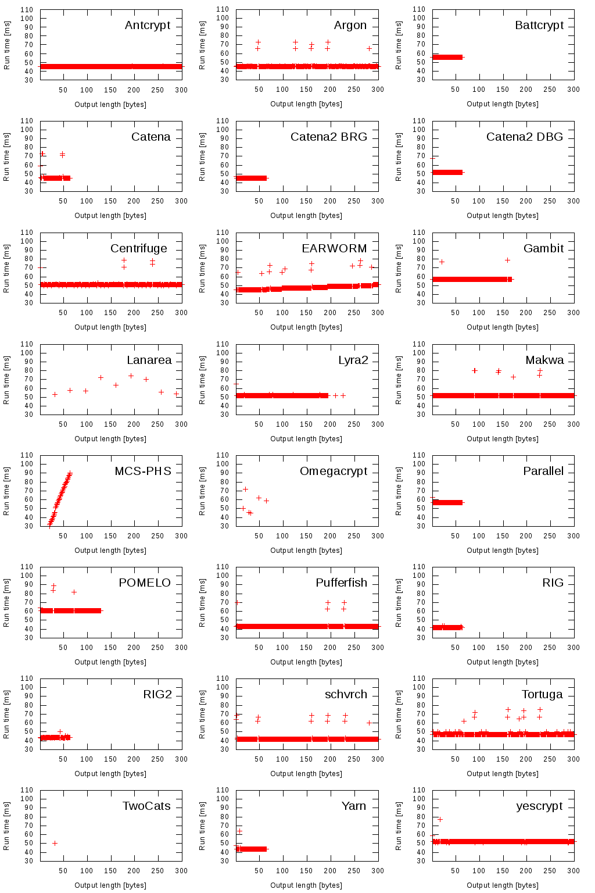

Figure 4: Test 4 – Variable time cost (impact to run time)
Milan Broz <gmazyland@gmail.com>
v0 2014-11-10 Initial version
v1 2014-11-17 Added Gambit test, fixed Catena limits, update conclusion notes.
All PHC candidates provide API function
int PHS(void *out, size_t outlen, const void *in, size_t inlen, const void *salt, size_t saltlen, unsigned int t_cost, unsigned int m_cost);
The following tests tries to do simple operations using this provided function.
The candidate functions do not implement the API parameters
consistently.
Some functions implement only one of the cost
parameters (memory or time) and the scale differs significantly.
The following tests take the password hash function as a
black-box,
supposing that invalid or unsupported parameters
combination is detected and function returns an error.
(Which is not always true, unfortunately.)
The tests always use one input parameter as a variable and measure run time and/or memory consumption.
Variable mcost/t_cost tests use special utility which measures difference in used memory using
getrusage() system call and
run time using clock_gettime(CLOCK_MONOTONIC).
The test run as special forked process started for each test separately.
The tests are repeated for 3 times and arithmetic mean of measurements is used.
Also I run simple dieharder randomness test and portability test (compile and run test vectors on big endian Sparc architecture).
Because most of the algoritmhs are in reference version without optimization, performance comparisons do not make sense.
The intention of tests it to compare limits and generic behaviour of algorithms.
The repository copies submitted source code of PHC algoritms and compiles static library for each algorithm.
All changes to submitted code are tracked by quilt, see patches subdirectory
in git (separate for every algorithm).
(Changes includes only makefile modification for library build fixes, if neccessary.)
All code and output is on GitHub - https://github.com/mbroz/PHCtest.
Included are all submitted algoritms, except PolyPassHash (cannot be tested this way).
I added also Catena2 and RIG2 as were sent to mailing list.
Algorithms are in default (if possible reference) configurations. (See source code for more details.)
Graphs are generated by Gnuplot.
plen min plen max out len min out len max mcost min mcost max tcost min tcost max
| | | | | | | | |
Antcrypt | 0 | 239 | 1 | | 0 | | 0 | |
Argon | 0 | 256 | 1 | 32 | 0 | | 1 | |
battcrypt | 0 | | 1 | 64 | 0 | | 0 | |
Catena | 0 | | 1 | 64 | 18 | 63 | 1 | |
Catena2-BRG| 0 | | 1 | 64 | 1 | | 1 | |
Catena2-DBG| 0 | | 1 | 64 | 1 | | 1 | |
Centrifuge | 0 | | 1 | | 0 | 63 | 0 | 63 |
EARWORM | 0 | | 1 | | 0 | | 1 | |
Gambit | 0 | 151 | 1 | 168 | 1 | | 1 | |
Lanarea | 1 | | mult 32 | 1 | | 1 | |
Lyra2 | 0 | | 1 | 191 | 4 | | 0 | |
Makwa | 0 | | 1 | | 0 | | 0 | |
MCS_PHS | 1 | 238 | 4 | 64 | 0 | | 0 | |
OmegaCrypt | 0 | 255 | 16,20,28,32,64 | 0 | | 0 | |
Parallel | 0 | | 1 | 64 | 0 | | 0 | 106 |
POMELO | 0 | | 1 | 128 | 0 | | 0 | |
Pufferfish | 0 | | 1 | | 0 | | 0 | |
RIG | 0 | | 1 | 64 | 1 | | 1 | |
RIG2 | 0 | | 1 | 64 | 1 | | 1 | |
Schvrch | 0 | | 1 | | 0 | | 0 | |
Tortuga | 0 | | 1 | | 0 | | 0 | |
TwoCats | 0 | | 32 | 32 | 0 | | 0 | |
Yarn | 0 | | 1 | 64 | 0 | | 0 | |
yescrypt | 0 | | 32 | 32 | 0 | | 0 | |
Tests 1 and 3-6 are run on Lenovo X230 notebook / i5 CPU / 4GB memory
Test 2 is run on dual CPU Sparc64, 8GB memory.
The output of hashing functions should pass basic randomness tests.
Fail in these tests indicates some internal problem. (While passing tests indicate in fact nothing:-)
The test generates 32bytes hashes of consencutive little endian integer (4 bytes) with fixed
16 byte salt.
Output is written into file (for time reasons the file size is limited to 400MB).
All algoritms uses minimal values of m_cost and t_cost.
The dieharder testsuite is run with file input generator (dieharder -a -f file -g 201).
The only completely failed output is for Tortuga (author already mentioned problem here).
There is a lot of minor fails for rgb_lagged_sum and marsaglia_tsang_gcd test but because
the input file is quite small,
these failures are probably not important.
The full test output is here.
As a simple code portability test I tried to run test vectors on completely different architecture,
namely on Sparc64 (with 32bit userspace) (Debian distro, Big Endian, 8Kb page size).
The patch for Makefiles and run output is here (BLAKE2 reference code replacement not included in patch).
I run test vectors (all of them passed on x86_64)
PASSED: battcrypt, catena, catena2-brg, catena2-dbg, makwa, mcs_phs, parallel, tortuga, yarn, yescrypt
CRASHED: earworm (segfault), twocats (Bus error)
FAILED vectors: antcrypt, argon, centrifuge, gambit, lanarea, lyra2, omegacrypt, pomelo, pufferfish, rig, rig2, schvrch
The goal is to verify and compare real used memory according
to memory cost parameter.
Test also compares impact to run time (large used memory accesses are
expensive).
Test increases mcost according to following table and measures used memory and run time.
Other parameters are fixed as below.
salt 16 bytes
input 32 bytes
output 32 bytes
|mcost_min|mcost_step|mcost_max|tcost |
antcrypt | 0 | 1 | 17 | 0 |
argon | 0 | 100 | 8000 | 0 |
battcrypt | 0 | 1 | 16 | 0 |
catena | 0 | 1 | 25 | 1 |
catena2-dbg| 0 | 1 | 25 | 1 |
catena2-brg| 0 | 1 | 25 | 1 |
centrifuge | 0 | 1 | 23 | 0 |
earworm | 0 | 1 | 19 | 1 |
gambit | 1 | 10000 |1000001 |100000|
lanarea | 0 | 10 | 300 | 1 |
lyra2 | 0 | 200 | 10000 | 1 |
makwa | N/A - mcost unused |
mcs_phs | N/A - cost/memory dependent |
omegacrypt | 0 | 1 | 11 | 0 |
parallel | N/A - mcost unused |
pomelo | 0 | 1 | 17 | 0 |
pufferfish | 0 | 1 | 15 | 0 |
rig | 0 | 1 | 17 | 1 |
rig2 | 0 | 1 | 17 | 1 |
schvrch | 0 | 1000 | 50000 | 0 |
tortuga | 0 | 10000 |1048575 | 0 |
twocats | 0 | 1 | 20 | 0 |
yarn | 0 | 1 | 25 | 0 |
yescrypt | 0 | 1 | 20 | 0 |

Figure 1: Test 3 – Variable memory cost (impact to memory use)

Figure 2: Test 3 – Variable memory cost (impact to run time)
The goal is to verify and compare run time according to time cost parameter.
Test also compares impact to used memory (in theory there shouldn't be
significant increase).
Test increases tcost according to following table and measures used memory and run time.
Other parameters are fixed as below.
salt 16 bytes
input 32 bytes
output 32 bytes
|tcost_min|tcost_step|tcost_max| mcost |
antcrypt | 0 | 1 | 30 | 10 |
argon | 0 | 10 | 300 | 500 |
battcrypt | 0 | 1 | 20 | 5 |
catena | 0 | 5 | 100 | 18 |
catena2-brg| 0 | 5 | 100 | 14 |
catena2-dbg| 0 | 5 | 100 | 14 |
centrifuge | 0 | 1 | 28 | 0 |
earworm | 0 | 500 | 20000 | 10 |
gambit | 1 | 2000 | 400000 | 1 |
lanarea | 0 | 1 | 8 | 150 |
lyra2 | 0 | 1000 | 20000 | 100 |
makwa | 0 | 10000 | 300000 | 0 |
mcs_phs | N/A - cost/memory dependent |
omegacrypt | 0 | 1 | 9 | 2 |
parallel | 0 | 1 | 26 | 0 |
pomelo | 0 | 1 | 15 | 5 |
pufferfish | 0 | 1 | 9 | 10 |
rig | 0 | 1000 | 20000 | 5 |
rig2 | 0 | 1000 | 20000 | 5 |
schvrch | 0 | 2000 | 200000 | 1000 |
tortuga | 0 | 10000 | 1048575 |100000 |
twocats | 0 | 1 | 20 | 7 |
yarn | 0 |100000 |10000000 | 15 |
yescrypt | 0 | 10 | 300 | 10 |

Figure 3: Test 4 – Variable time cost (impact to memory use)
Figure 4: Test 4 – Variable time cost (impact to run time)
The test should illustrate that run time is not dependent on input length.
The input is random password increased from 1 to 300 bytes.
Other parameters are fixed as below (mcost and tcost chosen to be minimal, just to provide run time aroung 50ms on the particular machine).
salt 16 bytes
output 32 bytes
input 1 - 300, step 1 bytes
| mcost| tcost|
antcrypt | 0 | 800|
argon | 0 | 2000|
battcrypt | 0 | 17|
catena | 14 | 10|
catena2-brg| 14 | 10|
catena2-dbg| 10 | 10|
centrifuge | 0 | 21|
earworm | 0 | 1000|
gambit |30001 | 30001|
lanarea | 1 | 600|
lyra2 | 3 | 10000|
makwa | 0 | 30000|
mcs_phs | 0 | 30000|
omegacrypt | 0 | 1|
parallel | 0 | 11|
pomelo | 0 | 13|
pufferfish | 0 | 12|
rig | 1 |500000|
rig2 | 1 | 3000|
schvrch | 0 | 12000|
tortuga | 0 | 80000|
twocats | 7 | 12|
yarn | 0 |500000|
yescrypt | 10 | 10|

Figure 5: Test 5 – Impact of input length to run time
The test should illustrate that run time is not dependent on output length.
The output is increased from 1 to 300 bytes.
Other parameters are fixed as below (mcost and tcost chosen to be minimal, just to provide run time aroung 50ms on the particular machine).
salt 16 bytes intput 32 bytes output 1 - 300, step 1 bytes mcost and tcose - same as in previous test

Figure 6: Test 6 – Impact of output length to run time
The tests were formerly intended as comparison of PHC candidated in KDF mode
(for potential future use in cryptsetup/LUKS full-disk encryption system).
The tests independently extends some tests run by Bill Cox (and try to reuse some test vectors).
The only common interface is required PHS() function so I tried to at least visualize canditates this way.
The code of many candidates is not portable (as was seen by failing test vectors generated on Intel architecture).
This is probably not issue for the first round but from the engineering point of view next round should provide also portable code variant.
While the most used architecture is x86_64 and optimizing it
there is important, for project like cryptsetup is very important
that all supported architectures can use the same algorithms
(Intel, ARM32/64, PowePC, S390, Sparc, etc).
Reference code probably should not rely on Intel only extensions.
Just for the reference, this patch
was required to fix compilation on Sparc architecture.
And this was the output of run_vectors script...
The Pufferfish PHS() API has to be fixed to produce proper raw output.
The Dieharder tests found nothing new, Tortuga algorithm has known weaknesses (and there is no new version AFAIK).
The Pufferfish mistake in submitted PHS() implementation (which includes even buffer overflow) just underlines that these
trivial tests
could be useful to find serious problems.
From the variable parameter run test is interesting that
The variable input/output length tests seems to show that
The Antcrypt, Battcrypt, EARWORM, Gambit, Lanarea, Makwa, Parallel, Pufferfish, Tortuga and partially yescrypt hash calculation output
is independent of output length parameter (it affects only length written to output but not calculation).
All other candidates will produce different hashes if output is shortened (IOW output 16 hash is not half of 32 bytes output).
Most of the problems are implementation details but probably should be fixed if candidates are selected for the next round.
The more rigorous tests will be run with second round PHC candidates anyway.